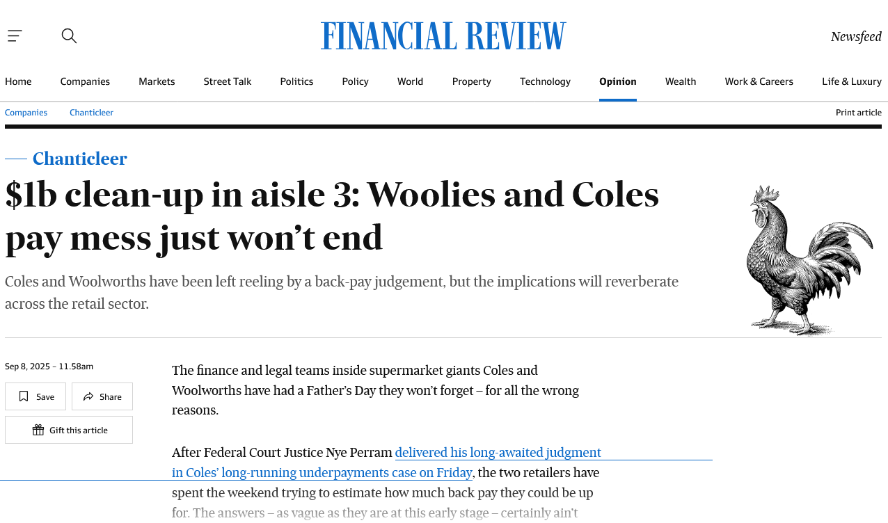

Responsible Investing
FIN 223 Lecture 7
Andrew Ainsworth
University of Wollongong
Lecture outline
- What is responsible investing?
- What is fiduciary duty and why is it important?
- Divestment vs engagement
- How should investors try to change corporate behaviour
- Do ESG factors impact risk?
- Is there a performance penalty for being green and responsible?
- What is “greenwashing”?
BP Deepwater Horizon

VW emissions trading scandal
BHP Samarco disaster in Brazil
The Banking Royal Commission
Staff underpayments at WOW and COL
Source: Australian Financial Review
Rio Tinto and Juukan Gorge
Source: Australian Financial Review
What is responsible investing?
- Investing has historically focused solely on managing wealth
- Non-financial criteria are less often considered
- Investors are becoming more and more concerned about non-financial impacts of their investments and firms have needed to respond
- Roots of responsible investing date back to faith-based investors (e.g. Quakers and Methodists)
- Responsible investing considers environmental, social and corporate governance (ESG) criteria in addition to the financial return being generated
- These criteria are incorporated in the portfolio construction process
- These factors focus on the practices of companies
- They provide guidance on what types of companies to include in a portfolio
Examples of ESG factors
- Environmental factors
- Energy usage and greenhouse gas emissions
- Pollution, plastics and waste generation
- Water conservation and use
- Sustainable land use and deforestation
- Maintaining and promoting biodiversity
- Social factors
- Human rights/modern slavery
- Employee relations - Physical safety and mental health
- Businesses in conflict areas
- Animal welfare
- Governance factors
- Excessive executive compensation
- Gender diversity of the company’s board
- Tax avoidance
- Corruption
What is responsible investing?
- There is a spectrum of responsible investment approaches
- New financial market instruments are being developed
- Banks are committing to funding firms and projects that tackle climate change
- Who are the responsible investors?
- Individuals
- Institutional investors (managed funds and superannuation/pension funds)
- Sovereign wealth funds and governments
- Foundations, family offices and university endowments
The responsible investment spectrum
Growth in responsible investing
- The growth in responsible investment assets under management (AUM) has been increasing around the world
- The number of investment options in traditional investment products has been growing
- New managed fund options (e.g. Australian Ethical)
- New exchange traded fund (ETF) options (e.g. GRNV.AX)
- There has been an increase in new investment products focused on ESG issues
- Green bonds, sustainability-linked bonds
- The growth has been driven by
- Changing investor attitudes
- Recognition that ESG factors are related to risk and return
- Data providers are now rating companies on ESG factors (e.g. LSEG Workspace)
Australian responsible investing
Fiduciary duty
- Fiduciary duty is the legal duty of a fiduciary to act in the best interests of the beneficiary
- Superannuation/pension fund managers make financial decisions on behalf of fund members
- Fiduciary duty means that asset managers need to act in the best interest of their investors
- The tension is whether it is the responsibility of asset managers to consider ESG factors
- The United Nations Principles for Responsible Investment (UN PRI) has recently released a report on fiduciary duty in the 21st century
- “This report describes how the integration of ESG issues into investment practice and decision making is an increasingly standard part of the regulatory and legal requirements for institutional investors, along with requirements to consider the sustainability-related preferences of their clients and beneficiaries, and to report on how these obligations have been implemented.”
Negative screening and divestment
- Negative screening involves excluding companies involved in the certain industries or countries
- Alcohol
- Gambling
- Tobacco
- Military Weapons
- Civilian Firearms
- Nuclear Power
- Adult Entertainment
- Genetically Modified Organisms (GMO)
- This effectively means that these companies need to be divested from the portfolio
Frequency of issues being screened
- Proportion of Australian fund managers surveyed who used a particular screen
Issues with divestment
- How does an investor classify companies?
- Excluding gun retailers in the US - Walmart?
- Excluding gambling in Australia – In 2021 Woolworths (WOW) demerged its alcohol and gambling businesses into Endeavour Group (EDV)
- Effectiveness
- For every buyer there is a seller
- Divestment can lead to a shareholder base that does not care about the issue
- Financial costs
- The investor needs to design the divestment strategy
- It can impact on fund performance, but may not impact on addressing the ESG issue at hand
- Does divestment line up with the expectations of beneficiaries?
- It comes back to fiduciary duty
Shareholder activism
- A more active approach is to retain ownership of the company’s stock or bond and engage with the company
- Meetings with the board and management
- Shareholder voting on proposals
- e.g. voting against excessive executive remuneration
- Submit formal shareholder proposal/resolution to the company
- These proposals/resolutions can be resolved with management or voted on at AGM
- Improve climate disclosure
- Improve GHG emissions targets
- Improve board diversity
Origin Energy (ORG) 2018 AGM
Source: Origin Energy
Origin Energy (ORG) 2018 AGM
Source: Renew Economy
ESG concerns and risk factors
- Climate risk has different elements
- Physical risk
- Floods impacting insurance companies
- Drought impacting agriculture companies
- Transition risk
- Carbon tax pricing can impact high carbon firms
- Firms with higher carbon emissions are valued at a discount (Bolton and Kacperczyk (2021))
- Electric vehicles and technological innovations are disrupting incumbents
- Liability risk
- Stakeholder litigation and regulatory enforcement
ESG concerns and risk factors
- Reputational risk
- If market participants care about ESG issues what happens if your company is involved in a ESG controversy?
- BP Deepwater Horizon oil spill
- Rio Tinto and Juukan Gorge
- Social-related risks
- Underpaying workers
- Safety record on mine sites
- Modern slavery and global supply chains
- These can have financial and reputational repercussions
ESG concerns and risk factors
- Regulatory risk is related to all the possible risks in the ESG area
- What is the chance that changes in regulation will have an adverse impact on company performance?
- Carbon pricing/tax
- Modern Slavery Act
- APRA guidelines on Climate Change Financial Risks
- Stranded assets
- Assets that are unable to earn an economic return before the end of their economic life
- e.g. newly commissioned coal-fired power stations
Responsible investing and performance
- Some argue that responsible investing constrains the investment opportunity set and this could lead to a mean-variance inefficient portfolio
Responsible investing and performance
- Others argue that socially responsible stocks could outperform as they will avoid costs associated with reputation loss, corporate social crisis or potential litigation that may arise from ignoring socially responsible practices
- There is a huge amount of literature written on
- Stock returns and ESG ratings
- Returns on managed funds focusing on responsible investing
- The evidence is mixed
- Returns differ by
- Time periods
- Countries
- ESG rating providers
- Risk adjustment methods
Do performance differences matter?
- There is substantial evidence that investment decisions are not made solely on financial grounds
- Certain investors consider ethical and personal values when making investment decisions
- Investors can obtain a non-financial benefit that relates to the environmental and social considerations of the investment and are willing to forgo an amount of financial return in exchange for holding socially responsible assets
- Bollen (2007) suggests that investors may ‘consume’ the socially responsible characteristic and as a result, it would enter the individual’s utility function
- This raises questions about the mean-variance utility function introduced in lecture 2
Greenwashing
- Companies that use marketing and public relations to appear to be green or socially responsible
- Sceptics argue that fund managers are trying to market themselves “green” to attract flows from investors
- Similarly, firms are trying to make themselves “appear” green to appeal to investors
- The different ESG rating companies might also be assisting this practice
- Is the rating accurate and reliable?
- Can everything be quantified?
- Undertake your own verification…
Greenwashing
Source: Australian Financial Review
Australian Green Treasury Bonds
- The first ever issue of an Australian Green Treasury Bond occurred on June 4 2024
- Coupon rate of 4.25%
- Initially $7b issue size
- Oversubscribed at issue (Demand > Supply)
- Maturity of 21 June 2034
- Green bonds use the proceeds to invest in specific projects that address one of
- Climate change mitigation
- Climate change adaptation
- Improved environmental outcomes
Conclusion
- What is responsible investing?
- What does ESG stand for?
- What is fiduciary duty and why is it important?
- What are the differences between divestment and engagement approaches to responsible investing?
- Discussion of types of ESG risk and how they can impact asset value
- Ultimately, they all impact financial performance
- Is there a performance penalty for being green and responsible?
- What is “greenwashing”?